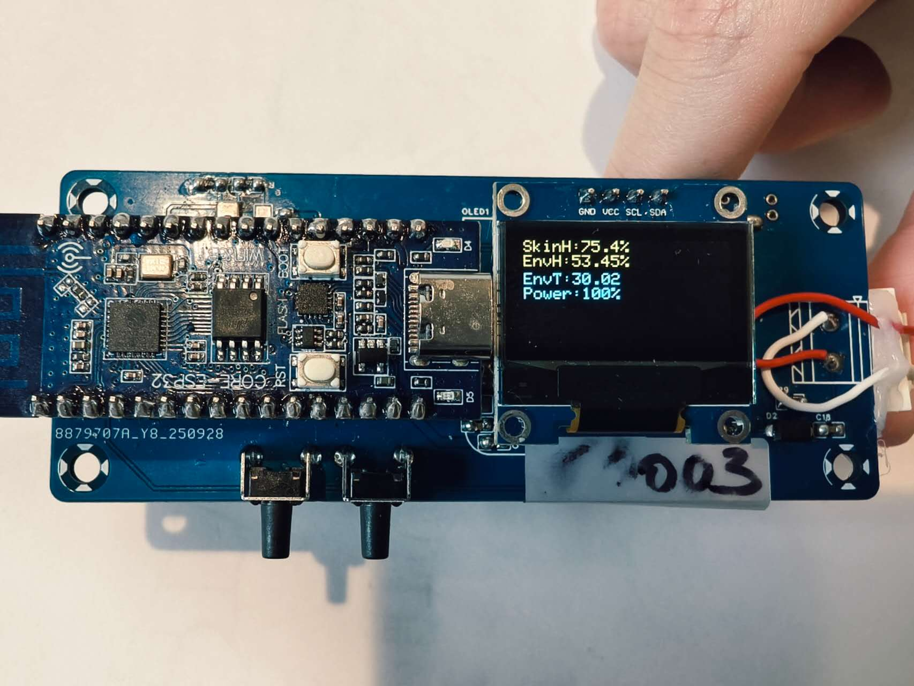
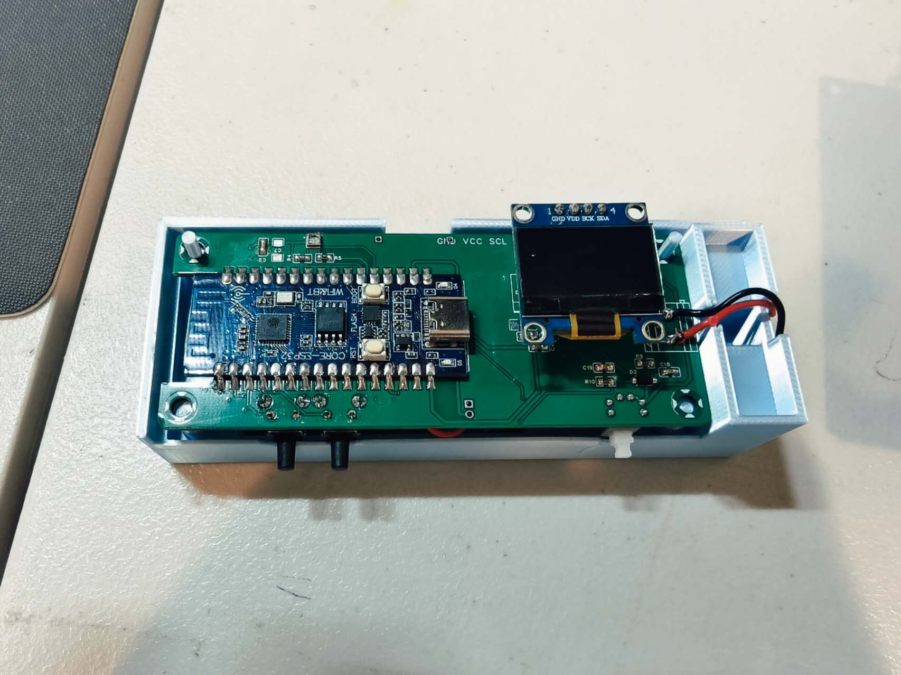

Portable sensing
Skin-hydration measurements are recorded alongside measurement quality and environmental context.
BUILTSYSTEM
Phase 1 connects portable sensing, environmental context, image AI, an Android workflow, longitudinal storage, and the Skin Condition Index.
THE HARDWARE, UP CLOSE
Two views of the physical SkinGuard device. The existing system diagrams below explain how its components connect.


OVERALL ARCHITECTURE
The current Phase 1 prototype covers daily sensing and image capture, multimodal data acquisition, the interpretable Skin Condition Index, trend monitoring, and structured records. Case-based personalization and guidance are shown as a future framework and have not yet been fully validated.

ORIGINAL DESIGN SLIDES
These project slides show the logic behind SkinGuard: sensing and image inputs feed the SCI, daily records build a personal history, and later phases will test personalized and forecast-informed guidance. The third layer is planned work, not a completed capability.


WORKING PROTOTYPE
These photographs document the current Phase 1 sensing hardware and its connection to the Android measurement workflow. They show the engineering prototype—not a finished consumer or medical device.


Skin-hydration measurements are recorded alongside measurement quality and environmental context.
BUILTA prototype image model provides one structured visual input. Labels are not dermatologist-verified and have known representation limits.
BUILTThe SCI combines hydration, environment, longitudinal history, and image-model output into a system-level state and trend framework.
BUILTThe application integrates Bluetooth data collection, local records, context entry, trend review, and cloud-connected analysis functions.
BUILTBUILT NOW VS. FUTURE
SYSTEM-LEVEL LOGIC
The SCI brings together skin hydration, environmental data, personal history, measurement quality, and image analysis. This keeps SkinGuard focused on how the whole system works instead of presenting the image model as the entire project.
Phase 2 will test whether individual baselines and weather context add useful information.
SCI IN THE APP
The current interface shows different SCI states with supporting context. These screens help users review patterns; they are not diagnoses or treatment recommendations.